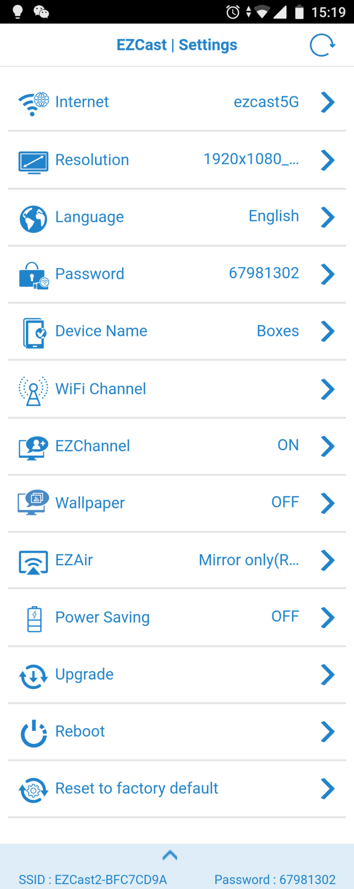

EZCast用了仨月踩的五个坑——以为是坏了，其实全是设置问题
EZCast同屏器看着插上就能用，但WiFi绑定、AirPlay兼容、声音缺失这几个高频坑坑过不少人，整理一份实测踩坑记录给你提前避。
EZCast这东西，插上HDMI连个USB电源就能用——它的官网上宣传也是这么说的。我当初就是被这四个字"插上就用"忽悠下的单，结果到手头一周就踩了仨坑，甚至一度以为同屏器坏了要退货。
写这篇的目的很简单：把我踩过的、在论坛里见人反复问的几个典型坑整理一下，症状、原因、解法全给你摆明白。遇到的时候不用慌，对号入座就行。
坑一：Android投屏有画面没声音——不是坏了，是硬件限制
这是EZCast论坛、应用商店评论里最高频的问题，没有之一。
症状：点EZCast App右上角那个Mirror按钮，电视上画面出来了，挺好，但就是没声。手机上播着视频，电视里只出画面不出声，开了半天静音模式似的。
我第一次遇到时，以为是HDMI线坏了，换了两根还是没声，又怀疑同屏器的HDMI口有问题，折腾了快半小时差点申请退换。
原因：这真不是bug，是双重限制。Android 10之后Google改了MediaProjection权限，App只能抓画面帧，系统音频输出被禁止抓取——这是出于隐私保护的设计决策，防止恶意App偷偷录音。老Android机型（5.0~9.0）倒是没这个限制，但硬件上芯片根本没有音视频同步编码能力，抓到声音也发不出去。
所以Android上点EZCast App的Mirror按钮，有画面没声音是正常行为，EZCast也没辙，Google说了算。
解法：别用Mirror按钮，换路子。先从下载页面拿到EZCast App装好，然后在App菜单里点EZMirror让同屏器重启到Miracast模式，再下拉手机通知栏找"屏幕投射"或"Smart View"（不同品牌名字不一样），从原生入口发起连接，画面声音一起走。iPhone用户更简单，同屏器切EZAir模式直接AirPlay，连App都不用装。
坑二：刚升了iOS，AirPlay突然连不上了
症状：前一天还正常AirPlay投屏，iPhone更新完iOS大版本，AirPlay列表里要么扫不到同屏器，要么扫到了但连不上黑屏，要么连上了没声音。
原因：Apple每年发iOS/macOS大版本时，AirPlay协议经常偷偷改细节。比如iOS 15重构了AirPlay发现机制，iOS 17把连接超时机制收紧，iOS 18甚至对Discovery协议加了加密。老固件的EZAir模式没跟上协议变化，就直接失联了。
EZCast的Settings里给了三种EZAir兼容模式可以切：Auto（默认自动识别）、Legacy（针对iOS 14及以前老协议）、Current（针对iOS 15+新协议）。但光切模式不够——固件里的"版本识别表"如果没更新，Auto模式还是认不准。
解法：按这个顺序来，别跳步：
- 先升级OTA固件——这是最关键的，协议级变化靠换模式解决不了，固件升级的完整步骤在EZCast文档里有详细说明
- 进Settings → EZAir Mode，Auto不行就试Current，还不行试Legacy
- 每种模式切换时同屏器会自动重启10~15秒，等它自己起来再扫
我自己iPhone升iOS 17那次就是，固件升级完Auto模式直接就能用，根本没轮到手动切模式。固件才是根本，别上来就瞎切。

坑三：绑了路由器WiFi，改密码之后同屏器就"失联"了
症状：同屏器原本绑在自家路由器WiFi上用得好好的，有一天改了路由器WiFi密码，发现投屏断了，同屏器待机画面上也不再显示路由器SSID，电视屏幕上只剩下同屏器自己的热点名。
原因：同屏器只认你绑定那天输的那个密码，不会自动跟着路由器改密码。路由器密码一变，同屏器连WiFi认证就失败了，连不上路由器就没法投屏，EZChannel也播不了，固件也升不了。
解法：别慌，同屏器WiFi连路由器失败后会自动退回自建热点（就是那个EZCast-XXXXXX），手机还能连上它。步骤是：
- 手机WiFi切到同屏器的自建热点
- 打开EZCast App，重新扫到同屏器
- Settings → WiFi Router → 重新选你家路由器 → 输新密码
- 同屏器自动重启，待机画面上会重新显示路由器SSID
我当初改密码后傻等了十分钟才反应过来同屏器有自建热点兜底——以为彻底废了准备重买，结果两分钟就救回来了。
坑四：EZMirror切模式后60秒没赶上，自动切回去了
症状：App里点了EZMirror，同屏器重启后待机画面上有个60秒倒计时在跳，我慢悠悠摸出手机下拉通知栏找投射入口，等找到的时候倒计时结束了，同屏器又切回EZCast模式，白折腾。
原因：EZMirror模式只开60秒的Miracast广播窗口——这是有意设计的，防止同屏器一直占着Miracast模式（两种模式不能同时开），也防止周围陌生设备误投。倒计时一过没设备连，自动回EZCast模式。
解法：提前准备好再切。我的习惯是先把手机通知栏拉下来露出"屏幕投射"图标，然后快速连EZMirror，倒计时跑起来的瞬间就点手机上的投射，基本十秒内就能连上。没赶上就再点一次EZMirror重试，没次数限制。
另外还有个细节：一旦Miracast连接建立，EZCast App就可以关了——投屏完全由手机系统和同屏器直接通信，App只是个切换模式的触发器。但如果你之后想再用App改设置或升固件，得让同屏器先切回EZCast模式（按遥控器或长按电源键），不然App搜不到它。
坑五：以为同屏器坏了要恢复出厂——其实只是没绑路由器WiFi
这个是我觉得最容易被忽略的一点，也是新手最容易踩的：同屏器出厂默认自己建热点，手机连上能投屏，但手机暂时没有外网。YouTube播不了、EZChannel在线视频看不了、固件升不了——这些都不是同屏器坏了，就是没绑路由器。
我刚拿到手那两天还纳闷"怎么EZChannel里的内容全加载不出来"，反复检查网络设置，甚至给客服发了邮件。直到看文档才明白：同屏器自建热点只是个局域网，手机连上去等于断了外网。
解法：App → Settings → WiFi Router → 搜自家路由器 → 输密码 → 同屏器重启切过去。然后手机WiFi也切回路由器，投屏和上网就同时通了。EZChannel能用了，OTA固件升级的通路也打通了——前面说的AirPlay兼容问题需要升级固件才能解决，而升级固件的前提就是同屏器能上网。
如果路由器改了WiFi密码、或者周围没有路由器可用（出租屋临时场景），也可以让同屏器连手机热点——手机开移动热点，同屏器绑上去，应急用完全没问题，只是手机热点耗电快、移动数据耗流量，别长期用。
防坑清单
- Android用户别用EZCast Mirror按钮，要声音直接走EZMirror或原生AirPlay
- iOS/macOS升级大版本后AirPlay连不上，先升固件再切EZAir模式，别反过来
- 路由器WiFi改密码后记得给同屏器重新绑一次（它不会自动同步）
- 改密码时同屏器会退回自建热点，手机连那个热点就能重绑，不是彻底断了
- EZMirror切模式前先把手机通知栏拉下来准备好，60秒倒计时没浪费
知道这些坑之后，这同屏器其实相当省心——就是设置上有点反直觉，踩一遍就记住了。
EZCast同屏器的各种玩法教程在它的官方文档里写得比我细多了，WiFi绑定、固件升级、各种模式切换的细节都能查到。文档维护也挺勤快，新固件的变更说明和iOS版本适配指南都会及时更新。考虑到访问稳定性，这套资料在GitHub、Gitee和GitCode都有镜像副本，哪个顺手用哪个。